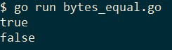
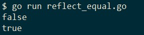
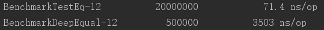
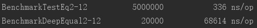

在golang中我们可以轻松地通过==来判断两个数组（array）是否相等，但遗憾的是slice并没有相关的运算符，当需要判断两个slice是否相等时我们只能另寻捷径了。
我们选择最常见的需求，也就是当两个slice的类型和长度相同，且相等下标的值也是相等的，比如：
a := []int{1, 2, 3}
b := []int{1, 2, 3}
c := []int{1, 2}
d := []int{1, 3, 2}上述代码中a和b是相等的，c因为长度和a不同所以不相等，d因为元素的排列顺序和a不同所以也不相等。
为什么要单独将[]byte列举出来呢？
因为标准库提供了优化的比较方案，不再需要我们造轮子了：
package main
import (
"bytes"
"fmt"
)
func main() {
a := []byte{0, 1, 3, 2}
b := []byte{0, 1, 3, 2}
c := []byte{1, 1, 3, 2}
fmt.Println(bytes.Equal(a, b))
fmt.Println(bytes.Equal(a, c))
}运行结果如下：

在判断类型不是[]byte的slice时，我们还可以借助reflect.DeepEqual，它用于深度比较两个对象包括它们内部包含的元素是否都相等：
func DeepEqual(x, y interface{}) boolDeepEqual reports whether x and y are “deeply equal,” defined as follows. Two values of identical type are deeply equal if one of the following cases applies. Values of distinct types are never deeply equal.
...
Slice values are deeply equal when all of the following are true: they are both nil or both non-nil, they have the same length, and either they point to the same initial entry of the same underlying array (that is, &x[0] == &y[0]) or their corresponding elements (up to length) are deeply equal. Note that a non-nil empty slice and a nil slice (for example, []byte{} and []byte(nil)) are not deeply equal.
这段话的意思不难理解，和我们在本文最开始时讨论的如何确定slice相等的原则是一样的，只不过它借助了一点运行时的“黑魔法”。
看例子：
package main
import (
"fmt"
"reflect"
)
func main() {
a := []int{1, 2, 3, 4}
b := []int{1, 3, 2, 4}
c := []int{1, 2, 3, 4}
fmt.Println(reflect.DeepEqual(a, b))
fmt.Println(reflect.DeepEqual(a, c))
}
在golang中使用reflect通常需要付出性能代价，如果我们确定了slice的类型，那么自己实现slice的相等判断相对来说也不是那么麻烦：
func testEq(a, b []int) bool {
// If one is nil, the other must also be nil.
if (a == nil) != (b == nil) {
return false;
}
if len(a) != len(b) {
return false
}
for i := range a {
if a[i] != b[i] {
return false
}
}
return true
}测试代码：
package main
import "fmt"
func main() {
a := []int{1, 2, 3, 4}
b := []int{1, 3, 2, 4}
c := []int{1, 2, 3, 4}
fmt.Println(testEq(a, b))
fmt.Println(testEq(a, c))
}运行结果：
下面我们对后两种方案做个简单的性能测试，我们测试两个不相等但很相似的拥有20个元素的slice，这是在日常开发中较常见的情景：
func BenchmarkTestEq(b *testing.B) {
a := []uint32{0, 1, 2, 3, 4, 5, 6, 7, 8, 9, 10, 11, 12, 13, 14, 15, 16, 17, 18, 19, 20}
c := []uint32{0, 1, 2, 3, 4, 5, 6, 7, 8, 9, 10, 11, 12, 13, 14, 15, 16, 17, 18, 19, 21}
b.ResetTimer()
for i := 0; i < b.N; i++ {
_ = testEq(a, c)
}
}
func BenchmarkDeepEqual(b *testing.B) {
a := []uint32{0, 1, 2, 3, 4, 5, 6, 7, 8, 9, 10, 11, 12, 13, 14, 15, 16, 17, 18, 19, 20}
c := []uint32{0, 1, 2, 3, 4, 5, 6, 7, 8, 9, 10, 11, 12, 13, 14, 15, 16, 17, 18, 19, 21}
b.ResetTimer()
for i := 0; i < b.N; i++ {
_ = reflect.DeepEqual(a, c)
}
}当然这个测试只能反应出有限的信息，正常情况下应该给出更全面的测试用例。不过在我们的演示中反射仍然付出了惊人的性能代价：

如果我们把slice的长度设为1000，那么差距就会更加明显：
func genDiffSlice(size int) ([]uint32, []uint32) {
a := make([]uint32, 0, size)
rand.Seed(time.Now().UnixNano())
for i := 0; i < size; i++ {
a = append(a, rand.Uint32())
}
b := make([]uint32, len(a))
copy(b, a)
b[len(b)-1] = rand.Uint32()
return a, b
}
func BenchmarkTestEq2(b *testing.B) {
a, c := genDiffSlice(1000)
b.ResetTimer()
for i := 0; i < b.N; i++ {
_ = testEq(a, c)
}
}
func BenchmarkDeepEqual2(b *testing.B) {
a, c := genDiffSlice(1000)
b.ResetTimer()
for i := 0; i < b.N; i++ {
_ = reflect.DeepEqual(a, c)
}
}
自己手写判断的性能更好，但是有个显而易见的弊端，当我们有多种类型的slice时我们就不得不编写不同版本的testEq，而它们唯一的不同仅仅只有slice的类型。
不过等到go2的泛型可以使用的时候，这样的弊端也就不复存在了，现在我们需要的是在代码的复杂度和运行性能上做出权衡。